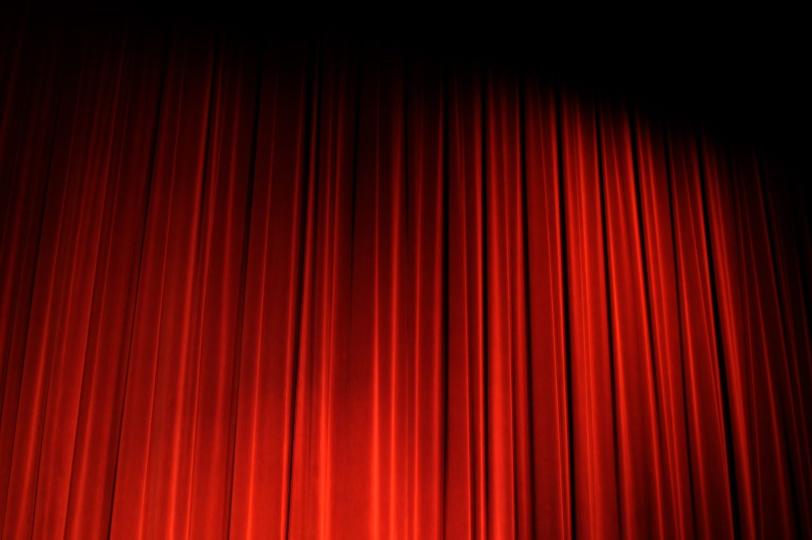

Por que não se pode assobiar nos bastidores do teatro?

Em teatros de tradição pelo mundo, há uma regra que os novatos aprendem nos primeiros dias de coxia: não se assobia nos bastidores. Quem deixa escapar um assobio leva bronca dos mais antigos, e em algumas casas é mandado sair, dar três voltas no lugar e bater na porta para pedir licença de volta, um pequeno ritual para desfazer o azar. A proibição soa como superstição pura, e virou uma delas, mas nasceu de um perigo bem concreto, ligado à maneira como os cenários subiam e desciam sobre a cabeça dos atores.
O que os marinheiros faziam dentro dos teatros?
A resposta começa longe do palco, no cais. Entre os séculos 17 e 19, muito antes dos contrarregras profissionais e da maquinaria elétrica, teatros europeus e americanos recorriam a marinheiros e trabalhadores do porto para operar o urdimento, o sistema de varas, cordas, roldanas e contrapesos que ergue e baixa cenários, cortinas e telões acima do palco. A temporada teatral coincidia com os meses frios, quando o comércio marítimo desacelerava e essa mão de obra ficava disponível.
Ninguém entendia melhor de cabos e nós. Içar um pano de cenário pesado com um sistema de roldanas era, no fundo, o mesmo trabalho de erguer a vela de um navio. Levantamentos sobre a história dos bastidores, como o da revista americana Dramatics e o da Playbill, registram essa herança: o vocabulário e os métodos do teatro de contrarregra guardam até hoje marcas do ofício marítimo.
Como um assobio podia derrubar um cenário?
A bordo, os marujos coordenavam manobras com códigos assobiados, mais audíveis que a voz em meio ao vento e ao barulho. Levaram o hábito para dentro do teatro. Antes dos fones de ouvido e da eletricidade, as trocas de cena eram sinalizadas por assobios e sinos: quem comandava a mudança assobiava para mandar descer ou subir uma vara.
Aí morava o risco. Um assobio fora de hora, vindo de um ator distraído nos bastidores ou de um visitante desavisado, podia ser confundido com a deixa e disparar a descida de uma vara carregada, muitas vezes lastreada com sacos de areia, sobre quem estivesse embaixo. Segundo a Shakespeare Theatre Company, de Washington, e o mesmo levantamento da Playbill, é dessa ameaça de acidente que vem a proibição. O azar, no caso, tinha causa mecânica: bastava um assobio ser confundido com um comando para uma vara despencar na hora errada.
Onde está a prova documental do costume?
O assobio como deixa de cena deixou registro escrito. Ele sobrevive nos promptbooks, os cadernos de marcação em que o ponto anotava cada movimento do espetáculo. Nesses manuscritos do século 19 aparece a letra W, de whistle, marcada no ponto exato em que se devia assobiar para mudar a cena.
Um exemplo citado pelos pesquisadores é o promptbook de Ricardo III montado pelo ator americano John Wilkes Booth por volta de 1861, o mesmo Booth que assassinaria o presidente Abraham Lincoln em 1865. O caderno está guardado no Harry Ransom Center, centro de pesquisa da Universidade do Texas em Austin, e nele um W indica o assobio para fechar as cortinas de mascaramento durante uma troca de cena. É a evidência de que, naquele teatro, o assobio era instrução de trabalho anotada no papel, não brincadeira de bastidor.
Por que a regra sobreviveu aos fones de ouvido?
Hoje as deixas correm por rádio, fone e luzes de sinalização, e o assobio perdeu qualquer função técnica. Ainda assim a proibição continua de pé, agora transformada em superstição de bom agouro, repetida em teatros que nunca operaram uma vara com corda de marinheiro.
Ela pertence ao mesmo repertório de crenças de coxia que inclui a luz fantasma, a lâmpada que fica acesa no palco vazio, e o costume de desejar \"merda\" antes da estreia em vez de boa sorte. No teatro de língua inglesa, o mesmo grupo de superstições manda nunca pronunciar o nome Macbeth dentro do edifício, tratando a tragédia de William Shakespeare por \"a peça escocesa\", cautela lembrada até hoje nos bastidores da Broadway e do West End de Londres. A origem exata do tabu do assobio, como acontece com boa parte dessas crenças, se perdeu no tempo. Sobra a versão mais repetida: a de que, um dia, um assobio no lugar errado realmente machucou alguém.
Perguntas rápidas
Por que não se pode assobiar nos bastidores do teatro? Porque, antes dos fones de ouvido, o assobio era usado como deixa para subir e descer cenários. Um assobio fora de hora podia ser confundido com um comando e derrubar uma vara pesada sobre o palco.
De onde vem esse costume? Da época em que teatros contratavam marinheiros e portuários para operar o sistema de cordas e contrapesos acima do palco. Eles se comunicavam por assobios, como faziam nos navios.
A regra ainda faz sentido hoje? A função técnica acabou, porque as deixas passaram para o rádio e as luzes de sinalização. A proibição permaneceu como superstição de sorte.
Como se desfaz o azar de ter assobiado? Não há regra única. Em muitas casas, a tradição manda o infrator sair da sala, girar três vezes e pedir para entrar de novo. É costume, não obrigação.